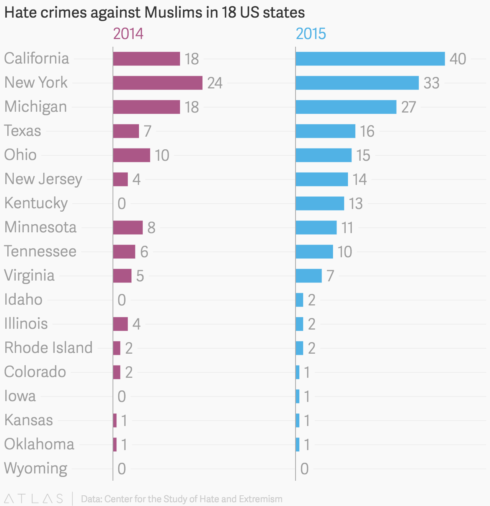

Design & Presentation
Information graphics &
data visualization
Why visualize?
- Show patterns
- Identify trends and outliers
- Communicate relationships
- Allow readers to discover for themselves or to search for interesting or specific data points in a larger field
- Get a better understanding of data & inspire new questions for further exploration
John Snow's map of London cholera deaths, 1854
 Via University of York
Via University of York
Show patterns
 Via Wall Street Journal
Via Wall Street Journal
Identify trends …
 Via NASA
Via NASA
… and outliers
Via New York TimesCommunicate relationships
Let the reader discover the point …
Via The Guardian… or let them explore
Via ProPublicaTerminology
Infographics v.
data visualization
Infographics are …
- manually drawn (more like illustrations)
- aesthetically rich (strong visual content meant to draw the eye and hold interest)
- relatively data-poor (because all info must be manually encoded)
Via Designing Data Visualization
Data visualizations are …
- algorithmically drawn (may have custom touches but is largely rendered with the help of a computer)
- often less decorative
- relatively data-rich (large volumes of data are welcome and viable)
Via Designing Data Visualization
But many interactive projects and graphics are somewhere in between! (Our outside this categorization entirely)
So you want to visualize some data?
Basic charts types
•
 Bar/column
Bar/column
•
 Line
Line
• Pie
Bar chart
 Via QuartzColumn chart
Via FiveThirtyEightPro-tip: don't truncate your y-axis!
 Via Heap Analytics
Via Heap Analytics
Line chart
 Via Quartz
Via Quartz
Pro-tip: you might want to truncate your y-axis*
*(a contentious subject)
Pie chart
Via Business InsiderPro-tip: too many slices will make your stomach hurt
 Via New York Times
Via New York Times
Pro-tip: you can't have more than 100% of a pie

Pro-tip: people are bad at comparing areas
 Via The Economist
Via The Economist
Other chart types to keep in mind …
Area chart
Via WSJ Via New York Times
Via New York Times
Pro-tip: area v. line
Via Visual.lyStacked bar chart
Via ProPublica Via ProPublica
Via ProPublica
 Via R Bloggers
Via R Bloggers
Chart-design basics
• Color


Tools:
Chartbuilder
https://quartz.github.io/Chartbuilder/
Highcharts
Basic map types
• categorical
• choropleth
• dot density
Categorical map
 Via Wall Street Journal
Via Wall Street Journal
Choropleth map(s)
 Via Washington Post
Via Washington Post
Pro-tip: use choropleth for standardized data
 Via Directions Magazine
Via Directions Magazine
Dot density map
Via New York TimesPin map (now ubiquitous)
 Via Yelp
Via Yelp
How to use
(and not abuse)
color on maps
 Via Eager Eyes
Via Eager Eyes
 Via Mapbox
Via Mapbox
 Via Penn State
Via Penn State
Pro-tip: test for colorblindness!
Via VizWizTools:
Carto
The end!
Keep in touch: nadja.popovich@journalism.cuny.edu